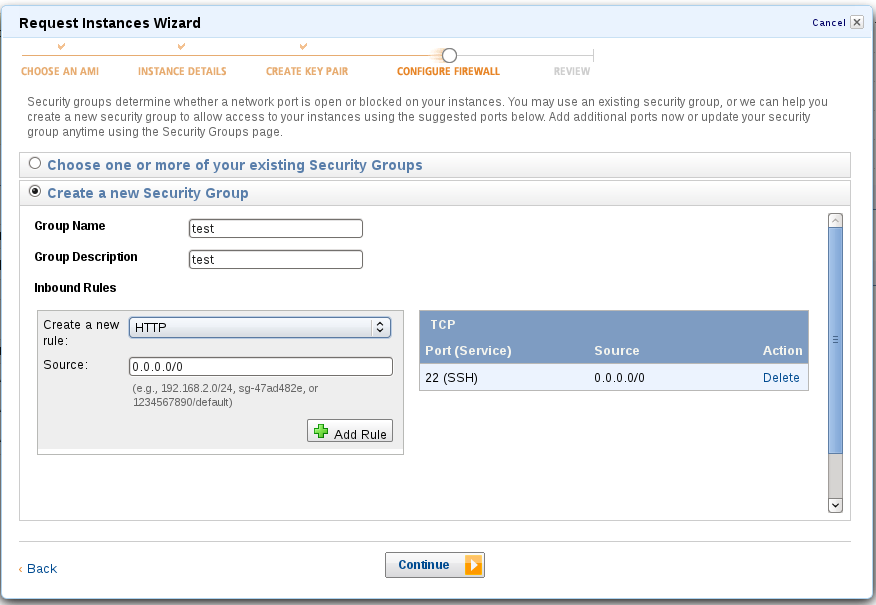
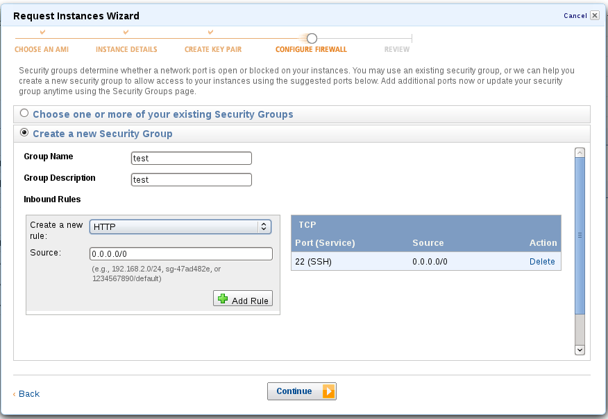

感謝您對「自由軟體鑄造場」的支持與愛護，十多年來「自由軟體鑄造場」受中央研究院支持，並在資訊科學研究所以及資訊科技創新研究中心執行，現已完成階段性的任務。 原網站預計持續維運至 2021年底，網站內容基本上不會再更動。本網站由 Denny Huang 備份封存。
也紀念我們永遠的朋友 李士傑先生（Shih-Chieh Ilya Li）。
也紀念我們永遠的朋友 李士傑先生（Shih-Chieh Ilya Li）。
什麼是資源表列?
Amazon Elastic Compute Cloud ( Amazon EC2 ) Featured
Rate this listing
1 vote
亞馬遜彈性雲端運算(英语：Amazon Elastic Compute Cloud，Amazon EC2) ，由亞馬遜公司提供的web服務，是一個讓使用者可以租用雲端電腦運行所需應用的系統。EC2藉由提供web服務的方式讓使用者可以彈性地運行自己的Amazon機器映像檔，使用者將可以在這個虛擬機器上運行任何自己想要的軟體或應用程式。 使用者可以隨時創建、執行、終止自己的虛擬伺服器，使用多少時間算多少錢，也因此這個系統是"彈性"使用的。EC2讓使用者可以控制執行虛擬伺服器 的主機地理位置，這可以讓延遲還有備援性最高。例如，為了讓系統維護時間最短，用戶可以在每個時區都運行自己的虛擬伺服器。Amazon.com以Amazon Web Services (AWS)的品牌提供EC2的服務。
以上介紹取自 維基百科: https://zh.wikipedia.org/wiki/Amazon_EC2
以上介紹取自 維基百科: https://zh.wikipedia.org/wiki/Amazon_EC2
以上介紹取自 維基百科: https://zh.wikipedia.org/wiki/Amazon_EC2
Amazon EC2 入門實作
Amazon EC2 介紹
亞馬遜彈性雲端運算(英语：Amazon Elastic Compute Cloud，Amazon EC2) ，由亞馬遜公司提供的web服務，是一個讓使用者可以租用雲端電腦運行所需應用的系統。EC2藉由提供web服務的方式讓使用者可以彈性地運行自己的Amazon機器映像檔，使用者將可以在這個虛擬機器上運行任何自己想要的軟體或應用程式。 使用者可以隨時創建、執行、終止自己的虛擬伺服器，使用多少時間算多少錢，也因此這個系統是"彈性"使用的。EC2讓使用者可以控制執行虛擬伺服器 的主機地理位置，這可以讓延遲還有備援性最高。例如，為了讓系統維護時間最短，用戶可以在每個時區都運行自己的虛擬伺服器。Amazon.com以Amazon Web Services (AWS)的品牌提供EC2的服務。以上介紹取自 維基百科: https://zh.wikipedia.org/wiki/Amazon_EC2
這篇文章是要讓沒有接觸過 Amazon 的使用者可以體驗 Amazon 雲端的服務, Amazon 有推出 AWS Free Usage Tier ( https://aws.amazon.com/free/ )的服務, 讓使用者在有限的條件底下, 體驗Amazon 的服務.
在開始之前要先感謝 CLOUDTW 的朋友, 還有 CLOUDTW 的兩位講師, 此篇文章乃是整理 AWS Bootcamp 實作營而來.
在開始之前要先感謝 CLOUDTW 的朋友, 還有 CLOUDTW 的兩位講師, 此篇文章乃是整理 AWS Bootcamp 實作營而來.
講師: 林毅民（Sammy Lin）
林毅民（Sammy Lin），目前是 CloudTW 社群成員，平日專注於 Web 開發，也熱愛嘗試各種新技術，更覺得把研究的心得和大家分享是一定要做的事情。
主要專長：web-based 系統開發。
連絡方式：Corn2277 AT gmail.com
部落格：blog.igotcloud.tw
講師: Ernest
Ernest，是一位獨立流程整合顧問。曾任台積公司製程整合工程師、擁有 PMP 國際專案管理師專業證照、AIESEC 社團老骨頭。現在主要從事跨領域整合、專案管理、web-based 系統開發、演講、教育訓練與顧問工作。常出現在 MozTW 社群。目前 Ernest 服務於 Pafers Tech 致力於運動器材產業的軟硬體整合服務方案。
主要專長：跨領域流程整合、專案管理、web-based 系統開發。
連絡方式：Dwchiang AT gmail.com
部落格：blog.ernestchiang.com
Twitter：dwchiang
以下操作畫面, 其畫面版權來自於 林毅民（Sammy Lin）, 筆者只是進行整理與敘述
請點選 I am a new user
請輸入 e-mail 地址
請點選 Sign in using our secure server
請輸入 相關資訊
請點選 Continue
Linux 底下可以直接使用 ssh 指令
Windows 可以使用 putty 這樣的連線軟體
Widows 的連線方式 請參考 Sammy Lin 的部落格 文章
利用ssh連入實體linux主機
https://blog.igotcloud.com/利用SSH連入實體Linux主機 建立 SSH 連線
剛剛有下載 Key 的 .pem檔案
這邊以 Linux 作業系統 並以 ssh 指令來進行連接
首先對下載的 .pem 檔案進行權限的處理(預設下載回來的權限太開放)
假設下載回來的.pem 檔案放置於 /home/max/Downloads 資料夾, 名稱為 awstest.pem
使用 ssh 指令連接到 EC2 主機
-i 為 .pem 檔案位置
使用者為 ec2-user
@後面請接上 剛剛 EC2 主機的 public DNS 名稱
成功的話會出現
我們此次使用 wordpress 來進行實作
首先切換身份為 root
請開啟瀏覽器 輸入 Public DNS Name
請點選建立一個設定檔
請點選 "衝吧"
請輸入相關資訊 (使用者帳號, 密碼, 資料庫名稱)
請點選 送出
請點選 開始安裝
請輸入相關資訊
請點選 安裝 WordPress
已經完成安裝
請點選登入
大功告成
林毅民（Sammy Lin），目前是 CloudTW 社群成員，平日專注於 Web 開發，也熱愛嘗試各種新技術，更覺得把研究的心得和大家分享是一定要做的事情。
主要專長：web-based 系統開發。
連絡方式：Corn2277 AT gmail.com
部落格：blog.igotcloud.tw
講師: Ernest
Ernest，是一位獨立流程整合顧問。曾任台積公司製程整合工程師、擁有 PMP 國際專案管理師專業證照、AIESEC 社團老骨頭。現在主要從事跨領域整合、專案管理、web-based 系統開發、演講、教育訓練與顧問工作。常出現在 MozTW 社群。目前 Ernest 服務於 Pafers Tech 致力於運動器材產業的軟硬體整合服務方案。
主要專長：跨領域流程整合、專案管理、web-based 系統開發。
連絡方式：Dwchiang AT gmail.com
部落格：blog.ernestchiang.com
Twitter：dwchiang
以下操作畫面, 其畫面版權來自於 林毅民（Sammy Lin）, 筆者只是進行整理與敘述
Step 1: 申請帳號
申請帳號網址：https://aws-portal.amazon.com/gp/aws/developer/registration/index.html請點選 I am a new user
請輸入 e-mail 地址
請點選 Sign in using our secure server
請點選 Continue
請輸入 相關資訊
地址的部份可以參考 郵政總局的中文地址英譯
https://www.post.gov.tw/post/internet/f_searchzone/index.jsp?ID=190103
請輸入驗證碼
請勾選 AWS Customer Agreement
請點選 Create Account and Continue
請輸入信用卡相關資訊(種類, 卡號, 持卡人姓名, 有效年月)
請選擇信用卡帳單地址
請點選 Continue
接下來會被要求 登入
請輸入剛剛申請的 e-mail 以及密碼
請點選 Sign in using our secure server
接下來要進行驗證程序
請點選Country Code: 為Taiwan
請輸入電話號碼 9xxxxxxxx (請輸入自己的電話號碼)
請點選 Call Me Now
接下來會有一個越洋來電
請按照語音的要求輸入 PIN 號碼
如果輸入正確就會得到成功的回應
請點選 Contine
成功的話會出現相關訊息
接下來可以點選左上角的 amazon web services 圖示
回到 AWS 首頁
請點選 Sign in to the AWS Management Console
地址的部份可以參考 郵政總局的中文地址英譯
https://www.post.gov.tw/post/internet/f_searchzone/index.jsp?ID=190103
請輸入驗證碼
請勾選 AWS Customer Agreement
請點選 Create Account and Continue
請輸入信用卡相關資訊(種類, 卡號, 持卡人姓名, 有效年月)
請選擇信用卡帳單地址
請點選 Continue
接下來會被要求 登入
請輸入剛剛申請的 e-mail 以及密碼
請點選 Sign in using our secure server
接下來要進行驗證程序
請點選Country Code: 為Taiwan
請輸入電話號碼 9xxxxxxxx (請輸入自己的電話號碼)
請點選 Call Me Now
接下來會有一個越洋來電
請按照語音的要求輸入 PIN 號碼
如果輸入正確就會得到成功的回應
請點選 Contine
成功的話會出現相關訊息
接下來可以點選左上角的 amazon web services 圖示
回到 AWS 首頁
請點選 Sign in to the AWS Management Console
Step 2: 建立一個自已的EC2主機
接下來請點選 EC2 標籤
請點選 Launch Instance
接下來會選擇建立方式
這邊我們選精靈的方式 Launch Classic Wizard
請點選 Continue
接下來請選擇要使用的印象檔
請注意, AWS free tier 計劃必須選取有橘色星星標記的映像檔
請點選 Select (這邊我們以 Basic 32-bit Amazon Linux AMI 2011.09)
接下來選取 Instance 數量 / 類型
這邊要注意的是, 免費的範圍只有在 Micro Instance 請勿選錯
請點選 Contine
接下來設定 核心以及相關設定
如果沒有特殊的需求, 保持預設值即可
請點選 Continue
接下來要建立instance 名稱
請在Value 欄位輸入 instance 名稱, 例如 awstest
請點選 Continue
接下來建立 Key pair
請點選Create a new Key Pair
並輸入名稱
請點選 Create & Download your Key Pair
接下來請儲存 Key 還有設定 Firewall (防火牆)
預設已經有開放 SSH port 22
我們接下來要另外開放 HTTP port 80
請點選 HTTP 於 Create a new rule
請點選 Add Rule 圖示

成功的話應該會出現
22 以及 80 port 的規則
請點選 Continue
接下來在啟動之前 Review 一下
沒有問題就點選 Launch 吧
啟動成功會有訊息告知
如以下畫面
請點選 Close 關閉精靈
接下來點選左方的Instances
會看到剛剛建立的 instances 已經在執行 running

接下來要準備使用 SSH 連線到 EC2 主機
首先我們要準備一些資訊
請勾選我們剛剛建立的 instance
會出現相關資訊, 其中 Public DNS: 就是等等要連線的 FQDN
SSH 連線的方式請點選 Launch Instance
接下來會選擇建立方式
這邊我們選精靈的方式 Launch Classic Wizard
請點選 Continue
接下來請選擇要使用的印象檔
請注意, AWS free tier 計劃必須選取有橘色星星標記的映像檔
請點選 Select (這邊我們以 Basic 32-bit Amazon Linux AMI 2011.09)
接下來選取 Instance 數量 / 類型
這邊要注意的是, 免費的範圍只有在 Micro Instance 請勿選錯
請點選 Contine
接下來設定 核心以及相關設定
如果沒有特殊的需求, 保持預設值即可
請點選 Continue
接下來要建立instance 名稱
請在Value 欄位輸入 instance 名稱, 例如 awstest
請點選 Continue
接下來建立 Key pair
請點選Create a new Key Pair
並輸入名稱
請點選 Create & Download your Key Pair
接下來請儲存 Key 還有設定 Firewall (防火牆)
預設已經有開放 SSH port 22
我們接下來要另外開放 HTTP port 80
請點選 HTTP 於 Create a new rule
請點選 Add Rule 圖示

成功的話應該會出現
22 以及 80 port 的規則
請點選 Continue
接下來在啟動之前 Review 一下
沒有問題就點選 Launch 吧
啟動成功會有訊息告知
如以下畫面
請點選 Close 關閉精靈
接下來點選左方的Instances
會看到剛剛建立的 instances 已經在執行 running
接下來要準備使用 SSH 連線到 EC2 主機
首先我們要準備一些資訊
請勾選我們剛剛建立的 instance
會出現相關資訊, 其中 Public DNS: 就是等等要連線的 FQDN
Linux 底下可以直接使用 ssh 指令
Windows 可以使用 putty 這樣的連線軟體
Widows 的連線方式 請參考 Sammy Lin 的部落格 文章
利用ssh連入實體linux主機
https://blog.igotcloud.com/利用SSH連入實體Linux主機 建立 SSH 連線
剛剛有下載 Key 的 .pem檔案
這邊以 Linux 作業系統 並以 ssh 指令來進行連接
首先對下載的 .pem 檔案進行權限的處理(預設下載回來的權限太開放)
假設下載回來的.pem 檔案放置於 /home/max/Downloads 資料夾, 名稱為 awstest.pem
>chmod 600 /home/max/Downloads/awstest.pem
Step 3: 登入您的EC2主機進行，開始操作囉!
-i 為 .pem 檔案位置
使用者為 ec2-user
@後面請接上 剛剛 EC2 主機的 public DNS 名稱
> ssh -i /home/max/Downloads/awstest.pem ec2-user@ec2-174-129-98-2.compute-1.amazonaws.com
成功的話會出現
__| __|_ )
_| ( / Amazon Linux AMI
___|\___|___|
See /usr/share/doc/system-release/ for latest release notes.
There are 14 security update(s) out of 18 total update(s) available
的歡迎畫面我們此次使用 wordpress 來進行實作
首先切換身份為 root
$sudo -i首先先升級套件
#yum update Dependencies Resolved =============================================================================================================================================== Package Arch Version Repository Size =============================================================================================================================================== Installing: kernel i686 2.6.35.14-103.47.amzn1 amzn-updates 7.5 M Updating: aws-amitools-ec2 noarch 1.4.0.2-1.3.amzn1 amzn-updates 88 k aws-cfn-bootstrap noarch 1.0-6.amzn1 amzn-updates 51 k nspr i686 4.8.8-1.11.amzn1 amzn-updates 121 k nss i686 3.12.10-2.23.amzn1 amzn-updates 876 k nss-sysinit i686 3.12.10-2.23.amzn1 amzn-updates 30 k nss-util i686 3.12.10-1.9.amzn1 amzn-updates 50 k perl i686 4:5.10.1-119.12.amzn1 amzn-updates 11 M perl-Compress-Raw-Zlib i686 2.023-119.12.amzn1 amzn-updates 75 k perl-Compress-Zlib i686 2.020-119.12.amzn1 amzn-updates 44 k perl-Digest-SHA i686 1:5.47-119.12.amzn1 amzn-updates 64 k perl-IO-Compress-Base i686 2.020-119.12.amzn1 amzn-updates 69 k perl-IO-Compress-Zlib i686 2.020-119.12.amzn1 amzn-updates 151 k perl-Module-Pluggable i686 1:3.90-119.12.amzn1 amzn-updates 38 k perl-Pod-Escapes i686 1:1.04-119.12.amzn1 amzn-updates 31 k perl-Pod-Simple i686 1:3.13-119.12.amzn1 amzn-updates 219 k perl-libs i686 4:5.10.1-119.12.amzn1 amzn-updates 634 k perl-version i686 3:0.77-119.12.amzn1 amzn-updates 49 k Installing for dependencies: python-daemon noarch 1.5.2-1.2.amzn1 amzn-updates 32 k python-lockfile noarch 0.8-3.2.amzn1 amzn-updates 17 k Transaction Summary =============================================================================================================================================== Install 3 Package(s) Upgrade 17 Package(s) Total download size: 21 M Is this ok [y/N]: y 輸入y升級套件 (此時可以感受套件飛快的安裝)接下來安裝 相關套件
#yum install php httpd mysql-server php-mysql Dependencies Resolved =============================================================================================================================================== Package Arch Version Repository Size =============================================================================================================================================== Installing: httpd i686 2.2.21-1.19.amzn1 amzn-updates 1.1 M mysql-server i686 5.1.52-1.6.amzn1 amzn-main 10 M php i686 5.3.8-3.20.amzn1 amzn-updates 1.3 M php-mysql i686 5.3.8-3.20.amzn1 amzn-updates 89 k Installing for dependencies: apr i686 1.3.9-3.8.amzn1 amzn-main 126 k apr-util i686 1.3.9-3.9.amzn1 amzn-main 84 k apr-util-ldap i686 1.3.9-3.9.amzn1 amzn-main 6.9 k httpd-tools i686 2.2.21-1.19.amzn1 amzn-updates 76 k mysql i686 5.1.52-1.6.amzn1 amzn-main 1.0 M mysql-libs i686 5.1.52-1.6.amzn1 amzn-main 1.7 M perl-DBD-MySQL i686 4.013-3.4.amzn1 amzn-main 144 k perl-DBI i686 1.609-4.4.amzn1 amzn-main 742 k php-cli i686 5.3.8-3.20.amzn1 amzn-updates 2.5 M php-common i686 5.3.8-3.20.amzn1 amzn-updates 625 k php-pdo i686 5.3.8-3.20.amzn1 amzn-updates 82 k system-logos noarch 4.9.99-11.13.amzn1 amzn-main 9.7 k Transaction Summary =============================================================================================================================================== Install 16 Package(s) Total download size: 20 M Installed size: 47 M Is this ok [y/N]: y 輸入y安裝套件啟動相關服務
#service httpd start # chkconfig httpd --list httpd 0:關閉 1:關閉 2:關閉 3:關閉 4:關閉 5:關閉 6:關閉 # chkconfig httpd on # chkconfig httpd --list httpd 0:關閉 1:關閉 2:開啟 3:開啟 4:開啟 5:開啟 6:關閉 #service mysqld start # chkconfig mysqld --list mysqld 0:關閉 1:關閉 2:關閉 3:關閉 4:關閉 5:關閉 6:關閉 # chkconfig mysqld on # chkconfig mysqld --list mysqld 0:關閉 1:關閉 2:開啟 3:開啟 4:開啟 5:開啟 6:關閉設定 mysql 內root 密碼為 password (這邊請設定自訂的密碼)
#mysqladmin -u root password 'password' #mysql -u root -p Enter password: 請輸入剛剛設定的密碼 Welcome to the MySQL monitor. Commands end with ; or \g. Your MySQL connection id is 3 Server version: 5.1.52 Source distribution Copyright (c) 2000, 2010, Oracle and/or its affiliates. All rights reserved. This software comes with ABSOLUTELY NO WARRANTY. This is free software, and you are welcome to modify and redistribute it under the GPL v2 license Type 'help;' or '\h' for help. Type '\c' to clear the current input statement.建立 mysql database 名稱為 wordpress
mysql> create database wordpress; Query OK, 1 row affected (0.00 sec)離開 mysql
mysql> exit取得 wordpress 相關套件
#wget https://tw.wordpress.org/wordpress-3.2.1-zh_TW.tar.gz解壓縮套件
#tar -xzvf wordpress-3.2.1-zh_TW.tar.gz將解壓縮後的目錄移動到 apache 根目錄下(這邊預設 DocumentRoot 為 /var/www/html)
#mv wordpress/* /var/www/html刪除相關檔案
#rm -rf wordpress #rm -f wordpress-3.2.1-zh_TW.tar.gz調整 相關權限及擁有人
#chown -R apache:apache /var/www/html/設定 Wordpress
請開啟瀏覽器 輸入 Public DNS Name
請點選建立一個設定檔
請點選 "衝吧"
請輸入相關資訊 (使用者帳號, 密碼, 資料庫名稱)
請點選 送出
請點選 開始安裝
請輸入相關資訊
請點選 安裝 WordPress
已經完成安裝
請點選登入
大功告成
Reviews (0)
Be the first to review this listing!
自由軟體鑄造場 製作 最佳瀏覽狀態：IE7或Firefox2.0以上 (建議使用Firefox) ‧ 解析度1024*768
E-Mail：contact@openfoundry.org Address：台北市南港區研究院路2段128號 中央研究院資訊科學研究所 . 隱私權條款. 使用條款
E-Mail：contact@openfoundry.org Address：台北市南港區研究院路2段128號 中央研究院資訊科學研究所 . 隱私權條款. 使用條款